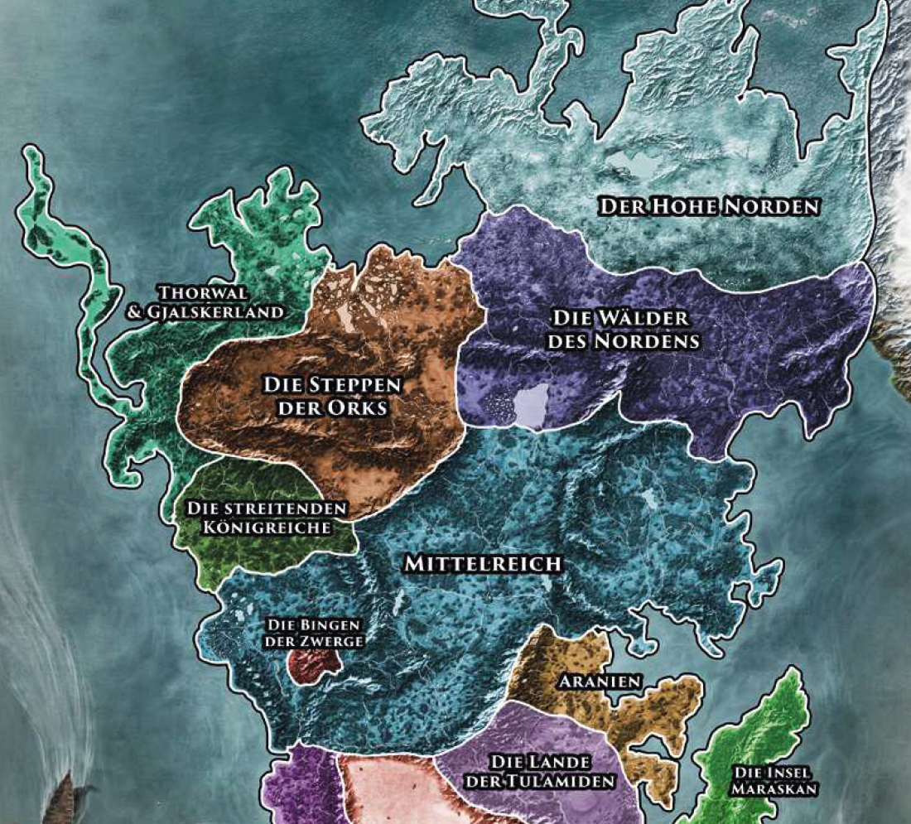

Der Steineichenwald sowie die Gebirge Große Olochtai und Firunswall umkränzen die trockene Steppe des Orklandes, als wollten sie mit aller Macht verhindern, dass seine Bewohner es jemals verlassen.
Doch die vielen Kriege der Vergangenheit haben gezeigt, dass die Schwarzpelze sich nicht einsperren lassen. Während die meisten Orks in größeren Stammesverbänden leben und sich hauptsächlich von Viehzucht und Jagd ernähren, sind sie vor allem als grausame Kämpfer weithin geführchtet. Wen sie gefangen nehmen, den erwartet ein grausames Schicksal: ist man kräftig, wird man in die Sklaverei getrieben, ist man dafür zu schwach, wird man dem stierhäuptigen Brazoragh oder dem orkischen Totengott Tairach geopfert. Der Aikar Brazoragh wird von beinahe allen Orks, die sonst kaum von Zwisten untereinander abzubringen sind, als von ihren Göttern gesandter Einiger der Stämme und Herrscher des Orklandes akzeptiert. Von Khezzara aus, der einzigen Stadt der ansonsten nomadisch lebenden Orkstämmen, sendet er seine Krieger immer wieder gegen die Menschen, um ihre Stärke zu erproben. Das Orkland gilt auch als Heimat der menschenfressenden Ober, den riesenhaften Schrecken, die einst bis an den tiefen im Mittelreich liegenden Gebirgsenpass der Trollpforte zogen, um das Land zu verheeren.
Östlich des Orklands erstreckt sich das Gebiet des ehemaligen Svelltschen Städtebunds. Einst eine blühende Handelsmacht, sind seit dem letzten Einfall der orkischen Horden nur auf sich allein gestellte Ortschaften geblieben. Städte wie Gashok und Tiefhusen wurden von den Schwarzpelzen erobert, ihrer Herrschaft unterworfen oder einfach dem Erdboden gleichgemacht. Lowangen muss noch heute hohe Tributsleistungen an die Besatzer abführen, will es nicht einst dasselbe Schicksal erleiden wie das beklagenswerte Tiefhusen. Tjolmar hingegen wurde von Plünderung und Unterjochung verschont, weil - so munkelt man - ein Verrat der dort ansässigen Zwerge der Stadt die Freiheit erkaufte. Riva, das am gleichnamigen Golf liegt, ist die letzte unabhängige Stadt des Svelltbunds, ein Tor zu den Nivesensteppen und wichtigster Hafen der aventurischen Nordküste.